import pandas as pd
import numpy as np
import time
import matplotlib.pyplot as plt
from sklearn.pipeline import Pipeline
from sklearn.compose import ColumnTransformer
from sklearn.preprocessing import StandardScaler
from sklearn.model_selection import TimeSeriesSplit, GroupKFold, GridSearchCV, cross_val_predict
from sklearn.linear_model import Ridge, Lasso
from sklearn.neighbors import KNeighborsRegressor
from sklearn.ensemble import RandomForestRegressor
from sklearn.svm import SVR
from sklearn.metrics import make_scorer, root_mean_squared_error, mean_absolute_error, r2_score
from statsmodels.stats.diagnostic import acorr_ljungbox
from scipy.stats import jarque_bera
import xgboost as xgb
from sklearn.preprocessing import TargetEncoder
from sklearn.impute import SimpleImputer
from sklearn.svm import SVR
import lime
from IPython.display import display
import lime.lime_tabular
from statsmodels.graphics.tsaplots import plot_acf
from statsmodels.tsa.stattools import acf
from sklearn.base import is_regressor
from sklearn.linear_model import SGDRegressor
from sklearn.svm import LinearSVR
from sklearn.kernel_approximation import RBFSampler
# 1. Cargar y preparar datos
df = pd.read_csv("california_accidents_cleaned.csv", parse_dates=['year_week'])
df[['start_date_str', 'end_date_str']] = df['year_week'].str.split('/', expand=True)
df['start_date'] = pd.to_datetime(df['start_date_str'])
df['year'] = df['start_date'].dt.isocalendar().year
df['week'] = df['start_date'].dt.isocalendar().week
df.drop(['start_date_str', 'end_date_str'], axis=1, inplace=True)
C:\Users\Sara\AppData\Local\Temp\ipykernel_14112\1061881644.py:2: UserWarning: Could not infer format, so each element will be parsed individually, falling back to `dateutil`. To ensure parsing is consistent and as-expected, please specify a format.
df = pd.read_csv("california_accidents_cleaned.csv", parse_dates=['year_week'])
X = df.drop(['accident_count', 'zone_week_id', 'year_week'], axis=1)
y = df['accident_count']
groups = df['zone_id']
time_series = df['year'] * 100 + df['week']
# Ordenar por fecha (aseguramos orden temporal)
sorted_idx = np.argsort(time_series)
X_sorted = X.iloc[sorted_idx]
y_sorted = y.iloc[sorted_idx]
groups_sorted = groups.iloc[sorted_idx]
# Dividir 75% entrenamiento / 25% test
n_train = int(0.75 * len(X_sorted))
X_train, X_test = X_sorted.iloc[:n_train], X_sorted.iloc[n_train:]
y_train, y_test = y_sorted.iloc[:n_train], y_sorted.iloc[n_train:]
groups_train = groups_sorted.iloc[:n_train] # <-- groups original
# Preprocesamiento: eliminar NaN y actualizar grupos
X_train = X_train.dropna(subset=["Temperature(F)", "Wind_Speed(mph)", "Humidity(%)"])
y_train = y_train.loc[X_train.index]
groups_train = groups_train.loc[X_train.index] # <-- ¡Actualizar grupos!
# 2. Preprocesamiento
numerical_features = [
"Temperature(F)", "Wind_Speed(mph)", "Precipitation(in)", "Humidity(%)",
"Start_Lat", "Start_Lng"
]
categorical_features = [
"zone_id"
]
count_features = [
"Junction", "Railway", "Roundabout", "Station", "Stop", "Traffic_Signal",
"Temperature(F)_extreme", "Wind_Speed(mph)_extreme", "Precipitation(in)_extreme",
"Humidity(%)_extreme", "is_night", "is_weekend"
]
preprocessor = ColumnTransformer([
('num', Pipeline([
('imputer', SimpleImputer(strategy='mean')),
('scaler', StandardScaler())
]), ["Temperature(F)", "Wind_Speed(mph)", "Humidity(%)", "Start_Lat", "Start_Lng"]),
# Imputar Precipitation(in) por separado con 0
('precipitation', Pipeline([
('imputer', SimpleImputer(strategy='constant', fill_value=0)), # <-- ¡Nueva!
('scaler', StandardScaler())
]), ["Precipitation(in)"]),
('cat', TargetEncoder(target_type='continuous'), ["zone_id"]),
('count', Pipeline([
('imputer', SimpleImputer(strategy='constant', fill_value=0)),
]), count_features)
])
pipelines = {
'knn': Pipeline([
('preprocessor', preprocessor),
('model', KNeighborsRegressor(n_neighbors=3, weights='uniform', algorithm='kd_tree')) # Forzar KD-Tree
]),
'ridge': Pipeline([
('preprocessor', preprocessor),
('model', Ridge(alpha=0.1, solver='saga', random_state=42)) # Optimizador saga
]),
'lasso': Pipeline([
('preprocessor', preprocessor),
('model', SGDRegressor(penalty='l1', alpha=0.1, max_iter=10000, random_state=42))
]),
'random_forest': Pipeline([
('preprocessor', preprocessor),
('model', RandomForestRegressor(n_estimators=100, max_depth=None, random_state=42))
]),
'xgboost': Pipeline([
('preprocessor', preprocessor),
('model', xgb.XGBRegressor(
objective='reg:squarederror',
random_state=42,
tree_method='hist',
predictor='cpu_predictor',
max_depth=3,
learning_rate=0.1,
n_estimators=100
))
]),
# Lineal más rápido
'svr_linear': Pipeline([
('preprocessor', preprocessor),
('model', LinearSVR(C=1.0, max_iter=10000, random_state=42))
]),
# Aproximación RBF con Random Fourier Features
'svr_rbf': Pipeline([
('preprocessor', preprocessor),
('rbf_sampler', RBFSampler(gamma=1.0, n_components=100, random_state=42)),
('model', SGDRegressor(max_iter=1000, tol=1e-3, penalty='l2', random_state=42))
])
}
param_grids = {
'knn': {'model__n_neighbors': [3], 'model__weights': ['uniform']}, # KD-Tree se fuerza en el pipeline
'ridge': {'model__alpha': [0.1]}, # solver='saga' ya se especifica
'lasso': {'model__alpha': [0.1]},
'random_forest': {'model__n_estimators': [100], 'model__max_depth': [None]},
'xgboost': {
'model__n_estimators': [100],
'model__max_depth': [3],
'model__learning_rate': [0.1]
},
'svr_linear': {'model__C': [1.0]},
'svr_rbf': {} # SGDRegressor con RBFSampler no tiene params por ahora
}
# 4. Validación cruzada
tscv = TimeSeriesSplit(n_splits=3)
group_kfold = GroupKFold(n_splits=3)
scorer = make_scorer(root_mean_squared_error, squared=False)
results = []
for model_name in pipelines:
if model_name not in param_grids:
continue
print(f"\n{'='*40}\nOptimizando {model_name.upper()}\n{'='*40}")
for mode, cv, group in [('temporal', tscv, None), ('spatial', group_kfold, groups_train)]:
start = time.time()
search = GridSearchCV(
pipelines[model_name],
param_grids[model_name],
cv=cv,
scoring=scorer,
n_jobs=-1,
verbose=0
)
# Añadir early stopping para XGBoost si temporal
if model_name == 'xgboost' and mode == 'temporal':
continue
else:
if mode == 'spatial':
search.fit(X_train, y_train, groups=group)
else:
search.fit(X_train, y_train)
best_model = search.best_estimator_
best_params = search.best_params_
# Predicción en test
y_pred_test = best_model.predict(X_test)
# Predicción en train (implementación manual para temporal)
if mode == 'spatial':
y_pred_train = cross_val_predict(best_model, X_train, y_train, cv=group_kfold, groups=groups_train, n_jobs=-1)
else:
y_pred_train = np.full(y_train.shape[0], np.nan)
for train_idx, test_idx in tscv.split(X_train):
best_model.fit(X_train.iloc[train_idx], y_train.iloc[train_idx])
y_pred_train[test_idx] = best_model.predict(X_train.iloc[test_idx])
# Eliminar NaN de splits no cubiertos
mask = ~np.isnan(y_pred_train)
y_pred_train = y_pred_train[mask]
y_train_filtered = y_train[mask]
# ================== IMPLEMENTACIÓN DE LIME ==================
if model_name in ['random_forest', 'xgboost']: # Solo para modelos de árboles
try:
# Preprocesar datos para LIME
X_train_processed = preprocessor.transform(X_train)
explainer = lime.lime_tabular.LimeTabularExplainer(
training_data=X_train_processed,
feature_names=preprocessor.get_feature_names_out(),
mode="regression",
verbose=False
)
# Explicar una instancia de prueba
instance_idx = 0
instance_processed = preprocessor.transform(X_test.iloc[[instance_idx]])
exp = explainer.explain_instance(
instance_processed[0],
best_model.named_steps['model'].predict,
num_features=5
)
# Mostrar explicación
print(f"\nExplicación LIME para {model_name.upper()} (Instancia {instance_idx}):")
try:
from IPython.display import display, HTML
display(HTML(exp.as_html()))
except:
for feature, weight in exp.as_list():
print(f"{feature}: {weight:.4f}")
except Exception as e:
print(f"Error en LIME: {str(e)}")
# ============================================================
duration = round(time.time() - start, 2)
# Métricas
rmse_test = root_mean_squared_error(y_test, y_pred_test)
mae_test = mean_absolute_error(y_test, y_pred_test)
r2_test = r2_score(y_test, y_pred_test)
if mode == 'spatial':
rmse_train = root_mean_squared_error(y_train, y_pred_train)
mae_train = mean_absolute_error(y_train, y_pred_train)
r2_train = r2_score(y_train, y_pred_train)
else:
rmse_train = root_mean_squared_error(y_train_filtered, y_pred_train)
mae_train = mean_absolute_error(y_train_filtered, y_pred_train)
r2_train = r2_score(y_train_filtered, y_pred_train)
# Pruebas estadísticas
residuals = y_test - y_pred_test
ljung_p = acorr_ljungbox(residuals, lags=[10], return_df=True)['lb_pvalue'].values[0]
jb_p = jarque_bera(residuals)[1]
print(f"\n→ Validación: {mode.upper()}")
print(f" - Mejores parámetros: {best_params}")
print(f" - Train RMSE: {rmse_train:.2f}, MAE: {mae_train:.2f}, R2: {r2_train:.2f}")
print(f" - Test RMSE: {rmse_test:.2f}, MAE: {mae_test:.2f}, R2: {r2_test:.2f}")
results.append({
'Model': model_name.upper(),
'Type': mode.capitalize(),
'Train_RMSE': round(rmse_train, 2),
'Train_MAE': round(mae_train, 2),
'Train_R2': round(r2_train, 2),
'Test_RMSE': round(rmse_test, 2),
'Test_MAE': round(mae_test, 2),
'Test_R2': round(r2_test, 2),
'Duration (s)': duration,
'Ljung-Box p-value': round(ljung_p, 4),
'Jarque-Bera p-value': round(jb_p, 4)
})
# Gráfica
plt.figure(figsize=(12, 5))
plt.plot(y_train.values, label='Train real', alpha=0.5)
plt.plot(y_pred_train, label='Train pred', alpha=0.6)
plt.plot(np.arange(len(y_train), len(y_train)+len(y_test)), y_test.values, label='Test real', alpha=0.5)
plt.plot(np.arange(len(y_train), len(y_train)+len(y_test)), y_pred_test, label='Test pred', alpha=0.8)
plt.title(f'{model_name.upper()} - {mode.capitalize()}')
plt.xlabel('Index')
plt.ylabel('Accident Count')
plt.legend()
plt.grid(True)
plt.tight_layout()
plt.show()
# ================== NUEVAS VISUALIZACIONES ==================
# 1. Gráfico de valores reales vs predichos
plt.figure(figsize=(12, 5))
# Definir datos según el modo de validación
if mode == 'temporal':
y_train_plot = y_train_filtered
y_pred_train_plot = y_pred_train
else: # spatial
y_train_plot = y_train
y_pred_train_plot = y_pred_train
# Scatter plot para train y test
plt.scatter(y_train_plot, y_pred_train_plot, alpha=0.3, label='Train')
plt.scatter(y_test, y_pred_test, alpha=0.3, label='Test')
# Línea de referencia perfecta
min_val = min(np.min(y_train_plot), np.min(y_test))
max_val = max(np.max(y_train_plot), np.max(y_test))
plt.plot([min_val, max_val], [min_val, max_val], '--r', label='Predicción Perfecta')
plt.title(f'{model_name.upper()} - Valores Reales vs Predichos ({mode.capitalize()})')
plt.xlabel('Real')
plt.ylabel('Predicho')
plt.legend()
plt.grid(True)
plt.show()
# 2. ACF de residuos con p-value
plt.figure(figsize=(12, 4))
plot_acf(residuals, lags=20, alpha=0.05)
plt.title(f'ACF de Residuos (Ljung-Box p={ljung_p:.4f})')
plt.show()
# 3. Histograma de residuos
plt.figure(figsize=(12, 4))
plt.hist(residuals, bins=30, density=True, alpha=0.7)
plt.title('Distribución de Residuos')
plt.xlabel('Error')
plt.ylabel('Densidad')
plt.grid(True)
plt.show()
========================================
Optimizando KNN
========================================
c:\Users\Sara\AppData\Local\Programs\python\Python312\Lib\site-packages\sklearn\model_selection\_search.py:1108: UserWarning: One or more of the test scores are non-finite: [nan]
warnings.warn(
→ Validación: TEMPORAL
- Mejores parámetros: {'model__n_neighbors': 3, 'model__weights': 'uniform'}
- Train RMSE: 6.53, MAE: 3.80, R2: 0.38
- Test RMSE: 6.10, MAE: 3.52, R2: 0.42
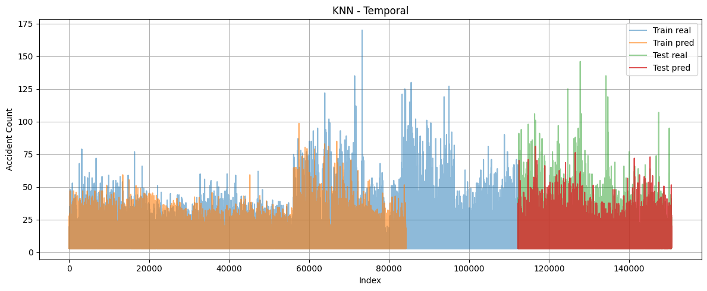
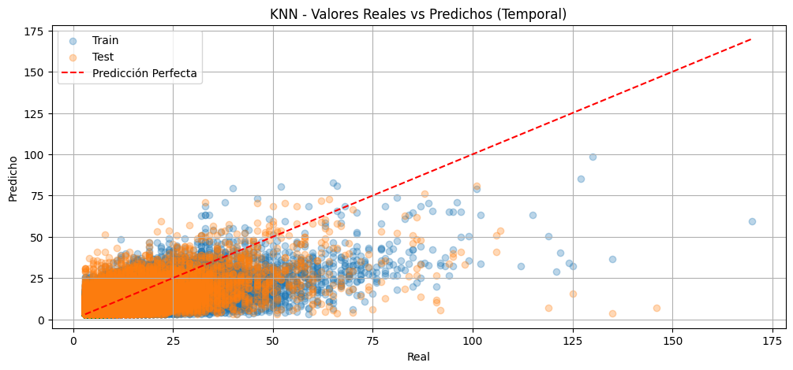
<Figure size 1200x400 with 0 Axes>
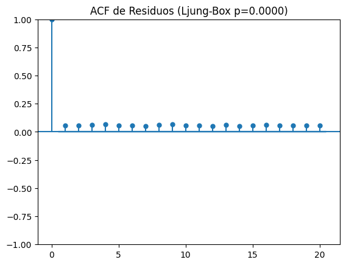
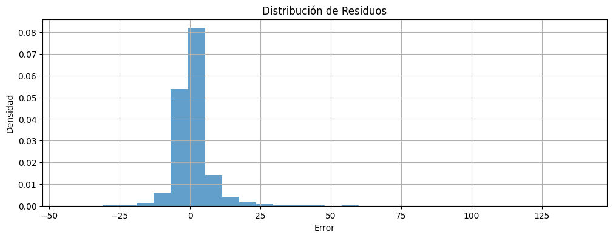
c:\Users\Sara\AppData\Local\Programs\python\Python312\Lib\site-packages\sklearn\model_selection\_search.py:1108: UserWarning: One or more of the test scores are non-finite: [nan]
warnings.warn(
→ Validación: SPATIAL
- Mejores parámetros: {'model__n_neighbors': 3, 'model__weights': 'uniform'}
- Train RMSE: 7.63, MAE: 4.63, R2: 0.04
- Test RMSE: 6.06, MAE: 3.50, R2: 0.43
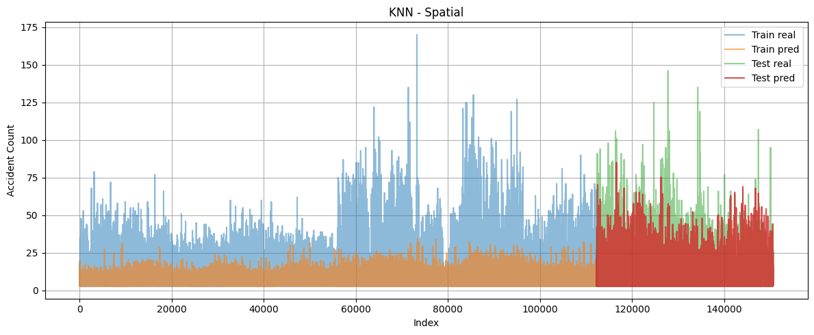
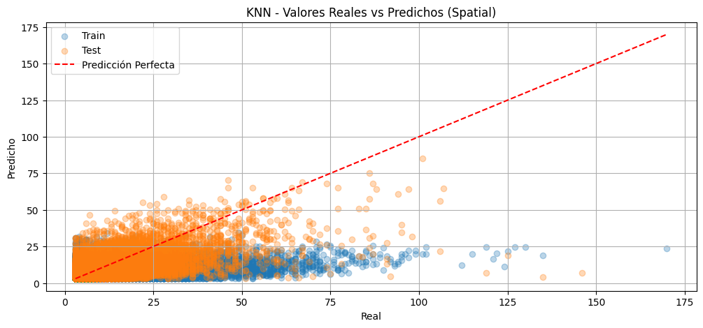
<Figure size 1200x400 with 0 Axes>
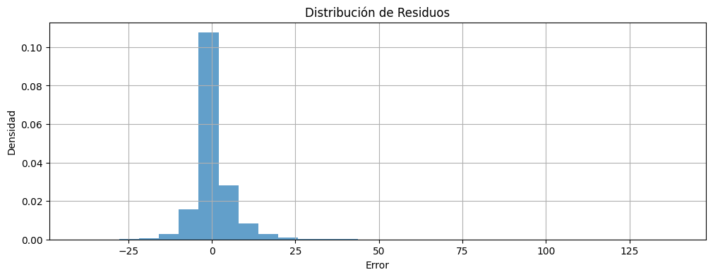
========================================
Optimizando RIDGE
========================================
c:\Users\Sara\AppData\Local\Programs\python\Python312\Lib\site-packages\sklearn\model_selection\_search.py:1108: UserWarning: One or more of the test scores are non-finite: [nan]
warnings.warn(
c:\Users\Sara\AppData\Local\Programs\python\Python312\Lib\site-packages\sklearn\linear_model\_sag.py:348: ConvergenceWarning: The max_iter was reached which means the coef_ did not converge
warnings.warn(
c:\Users\Sara\AppData\Local\Programs\python\Python312\Lib\site-packages\sklearn\linear_model\_sag.py:348: ConvergenceWarning: The max_iter was reached which means the coef_ did not converge
warnings.warn(
c:\Users\Sara\AppData\Local\Programs\python\Python312\Lib\site-packages\sklearn\linear_model\_sag.py:348: ConvergenceWarning: The max_iter was reached which means the coef_ did not converge
warnings.warn(
c:\Users\Sara\AppData\Local\Programs\python\Python312\Lib\site-packages\sklearn\linear_model\_sag.py:348: ConvergenceWarning: The max_iter was reached which means the coef_ did not converge
warnings.warn(
→ Validación: TEMPORAL
- Mejores parámetros: {'model__alpha': 0.1}
- Train RMSE: 3.93, MAE: 2.40, R2: 0.77
- Test RMSE: 4.10, MAE: 2.35, R2: 0.74
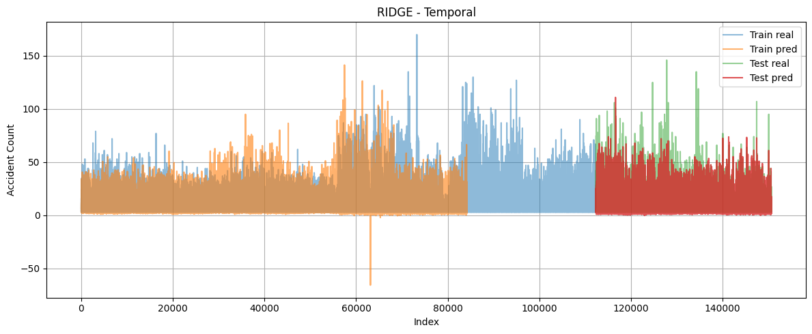
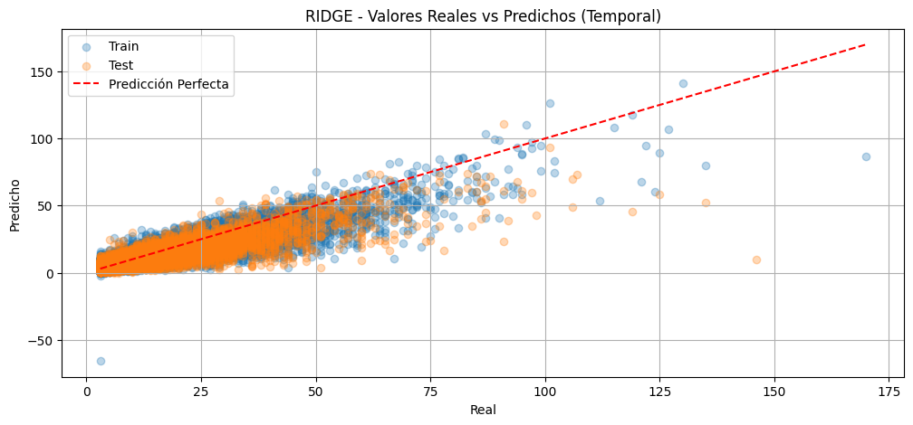
<Figure size 1200x400 with 0 Axes>
c:\Users\Sara\AppData\Local\Programs\python\Python312\Lib\site-packages\sklearn\model_selection\_search.py:1108: UserWarning: One or more of the test scores are non-finite: [nan]
warnings.warn(
c:\Users\Sara\AppData\Local\Programs\python\Python312\Lib\site-packages\sklearn\linear_model\_sag.py:348: ConvergenceWarning: The max_iter was reached which means the coef_ did not converge
warnings.warn(
→ Validación: SPATIAL
- Mejores parámetros: {'model__alpha': 0.1}
- Train RMSE: 4.07, MAE: 2.68, R2: 0.73
- Test RMSE: 4.10, MAE: 2.35, R2: 0.74
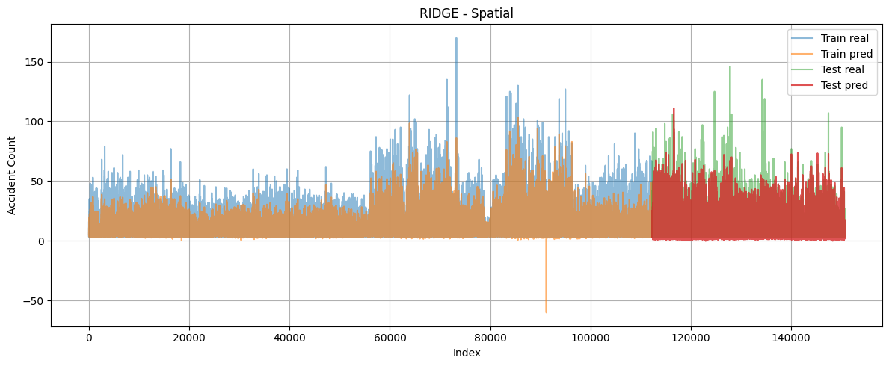
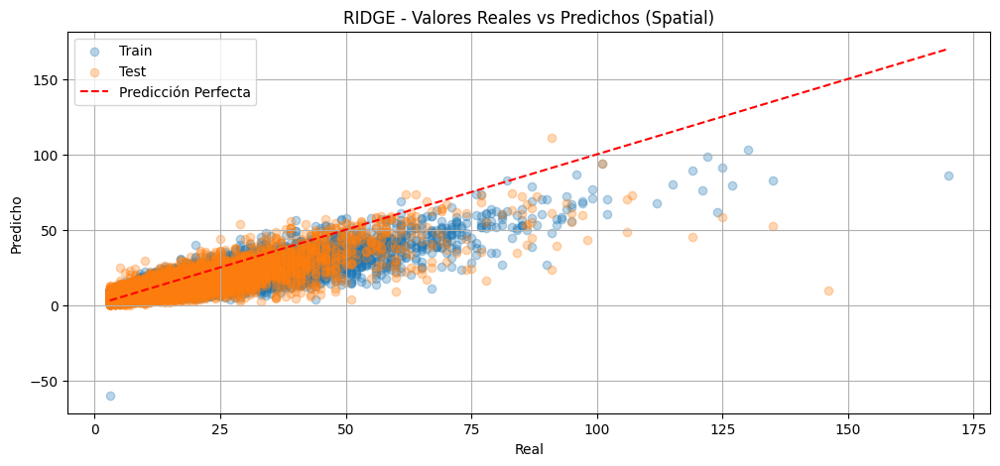
<Figure size 1200x400 with 0 Axes>
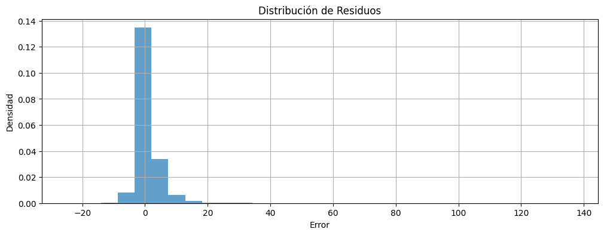
========================================
Optimizando LASSO
========================================
c:\Users\Sara\AppData\Local\Programs\python\Python312\Lib\site-packages\sklearn\model_selection\_search.py:1108: UserWarning: One or more of the test scores are non-finite: [nan]
warnings.warn(
→ Validación: TEMPORAL
- Mejores parámetros: {'model__alpha': 0.1}
- Train RMSE: 6.50, MAE: 3.69, R2: 0.38
- Test RMSE: 5.19, MAE: 2.91, R2: 0.58
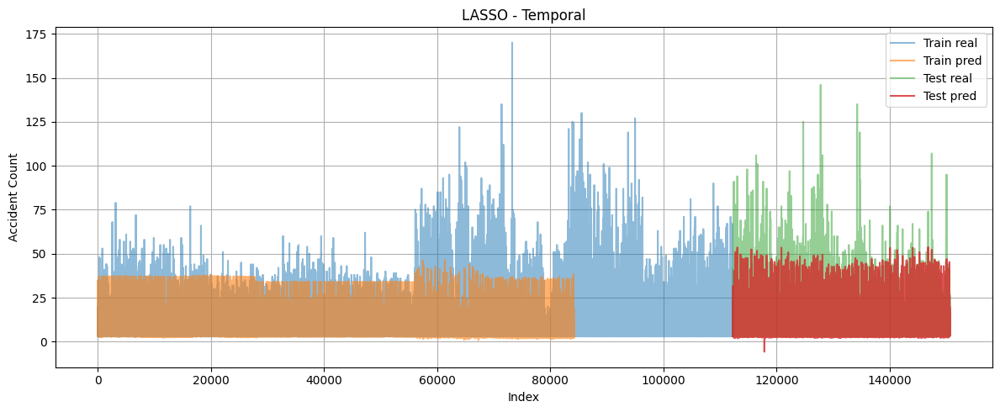
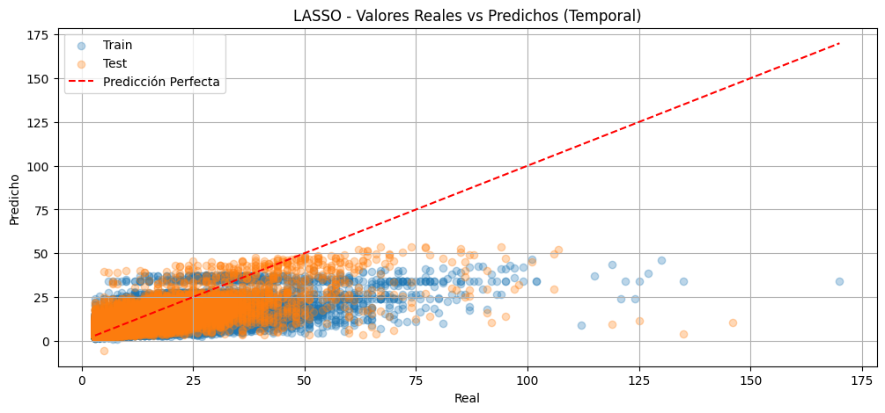
<Figure size 1200x400 with 0 Axes>
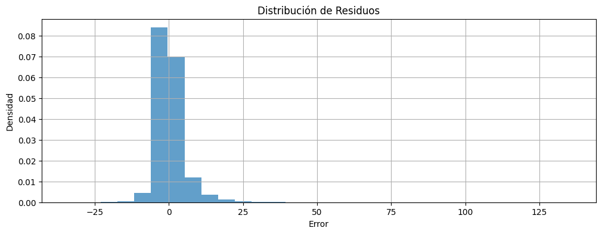
c:\Users\Sara\AppData\Local\Programs\python\Python312\Lib\site-packages\sklearn\model_selection\_search.py:1108: UserWarning: One or more of the test scores are non-finite: [nan]
warnings.warn(
→ Validación: SPATIAL
- Mejores parámetros: {'model__alpha': 0.1}
- Train RMSE: 6.80, MAE: 4.21, R2: 0.24
- Test RMSE: 5.19, MAE: 2.91, R2: 0.58
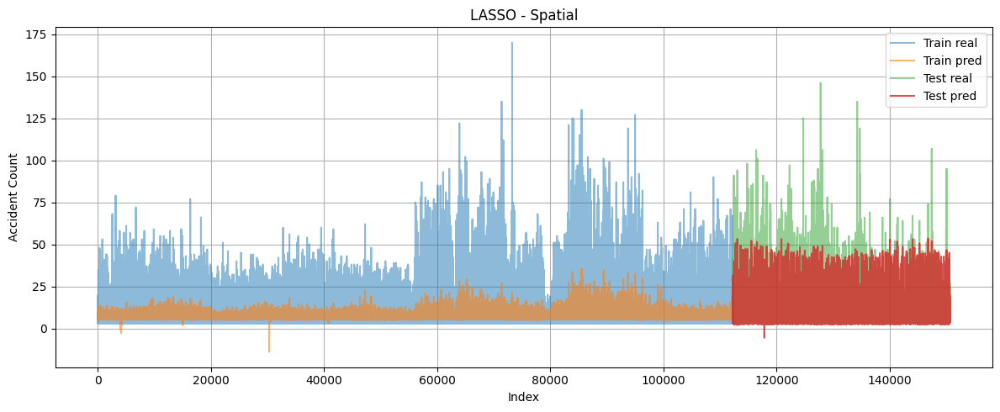
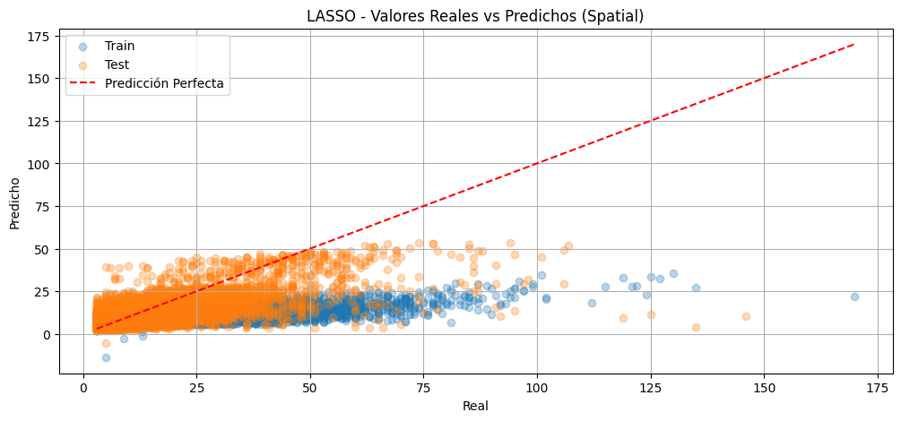
<Figure size 1200x400 with 0 Axes>
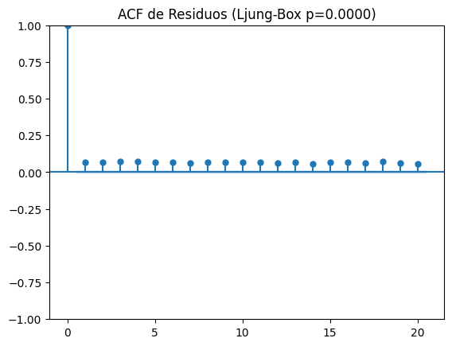
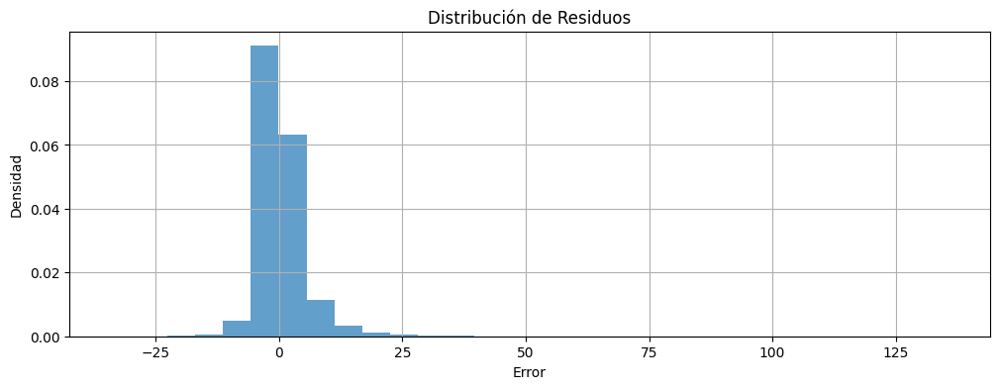
========================================
Optimizando RANDOM_FOREST
========================================
c:\Users\Sara\AppData\Local\Programs\python\Python312\Lib\site-packages\sklearn\model_selection\_search.py:1108: UserWarning: One or more of the test scores are non-finite: [nan]
warnings.warn(
Error en LIME: This ColumnTransformer instance is not fitted yet. Call 'fit' with appropriate arguments before using this estimator.
→ Validación: TEMPORAL
- Mejores parámetros: {'model__max_depth': None, 'model__n_estimators': 100}
- Train RMSE: 3.78, MAE: 2.17, R2: 0.79
- Test RMSE: 3.90, MAE: 2.08, R2: 0.76
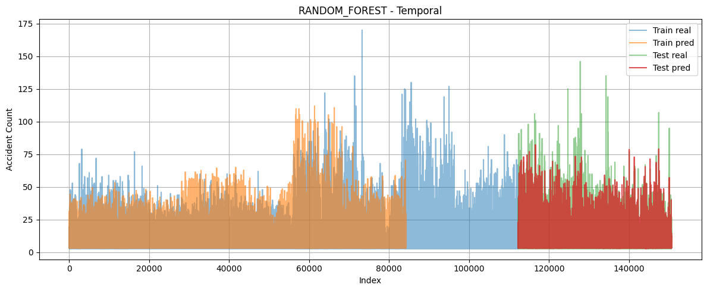
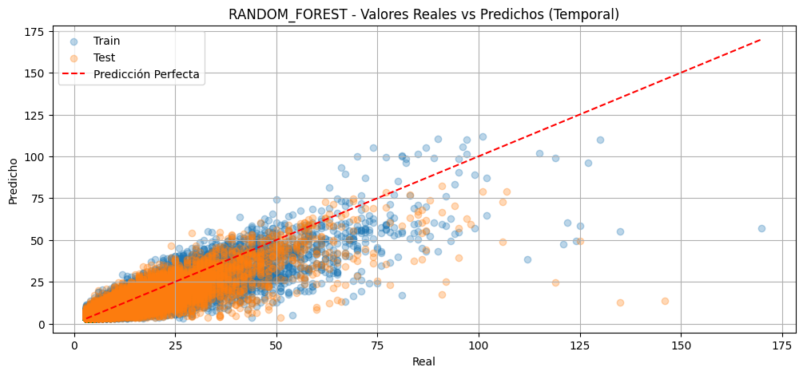
<Figure size 1200x400 with 0 Axes>
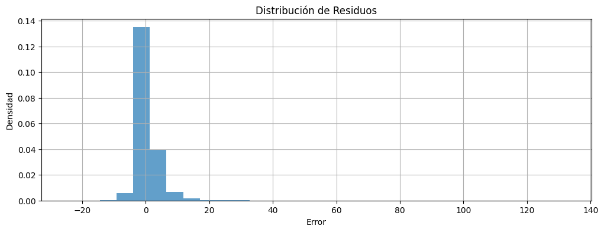
c:\Users\Sara\AppData\Local\Programs\python\Python312\Lib\site-packages\sklearn\model_selection\_search.py:1108: UserWarning: One or more of the test scores are non-finite: [nan]
warnings.warn(
Error en LIME: This ColumnTransformer instance is not fitted yet. Call 'fit' with appropriate arguments before using this estimator.
→ Validación: SPATIAL
- Mejores parámetros: {'model__max_depth': None, 'model__n_estimators': 100}
- Train RMSE: 3.99, MAE: 2.37, R2: 0.74
- Test RMSE: 3.90, MAE: 2.08, R2: 0.76
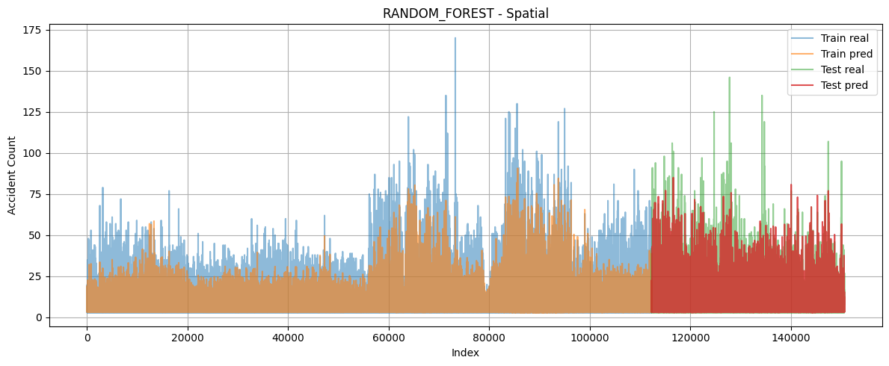
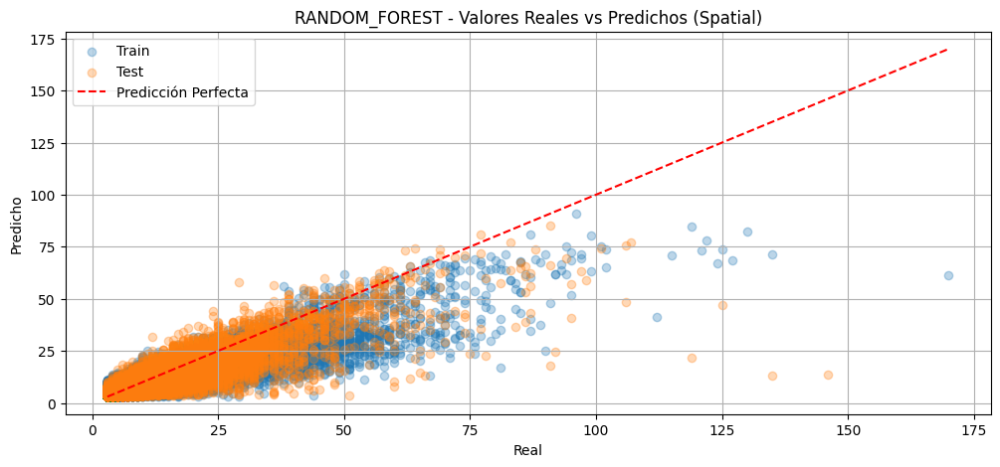
<Figure size 1200x400 with 0 Axes>
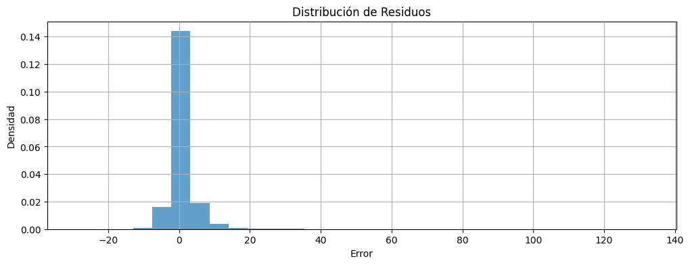
========================================
Optimizando XGBOOST
========================================
c:\Users\Sara\AppData\Local\Programs\python\Python312\Lib\site-packages\sklearn\model_selection\_search.py:1108: UserWarning: One or more of the test scores are non-finite: [nan]
warnings.warn(
c:\Users\Sara\AppData\Local\Programs\python\Python312\Lib\site-packages\xgboost\training.py:183: UserWarning: [12:28:09] WARNING: C:\actions-runner\_work\xgboost\xgboost\src\learner.cc:738:
Parameters: { "predictor" } are not used.
bst.update(dtrain, iteration=i, fobj=obj)
Error en LIME: This ColumnTransformer instance is not fitted yet. Call 'fit' with appropriate arguments before using this estimator.
→ Validación: SPATIAL
- Mejores parámetros: {'model__learning_rate': 0.1, 'model__max_depth': 3, 'model__n_estimators': 100}
- Train RMSE: 3.72, MAE: 2.34, R2: 0.77
- Test RMSE: 3.84, MAE: 2.12, R2: 0.77
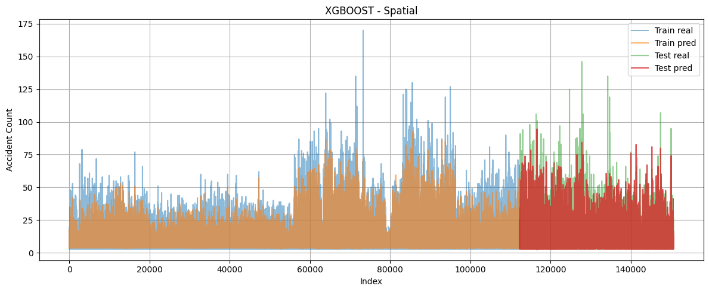
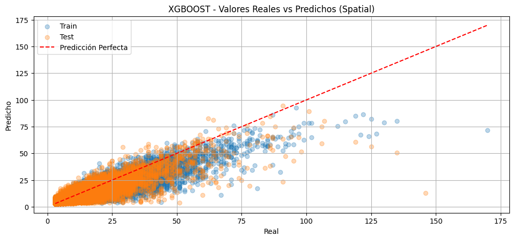
<Figure size 1200x400 with 0 Axes>
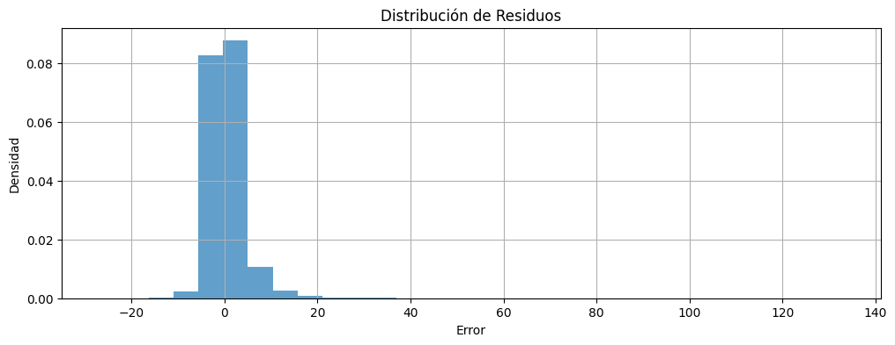
========================================
Optimizando SVR_LINEAR
========================================
c:\Users\Sara\AppData\Local\Programs\python\Python312\Lib\site-packages\sklearn\model_selection\_search.py:1108: UserWarning: One or more of the test scores are non-finite: [nan]
warnings.warn(
→ Validación: TEMPORAL
- Mejores parámetros: {'model__C': 1.0}
- Train RMSE: 3.80, MAE: 2.30, R2: 0.79
- Test RMSE: 4.22, MAE: 2.42, R2: 0.72
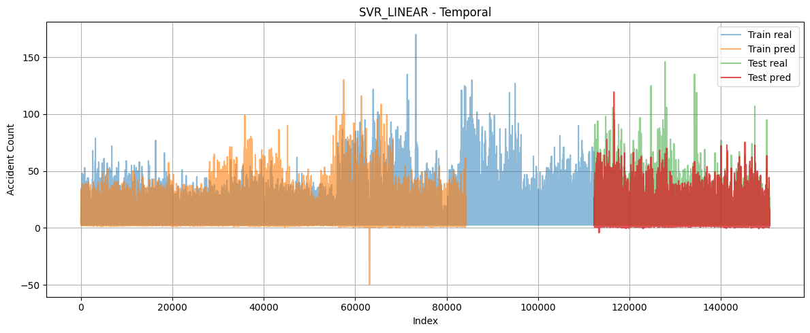
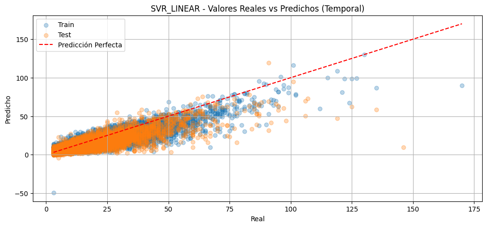
<Figure size 1200x400 with 0 Axes>
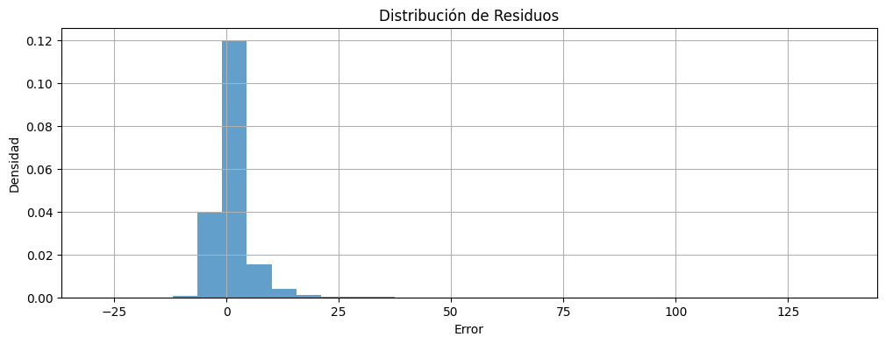
c:\Users\Sara\AppData\Local\Programs\python\Python312\Lib\site-packages\sklearn\model_selection\_search.py:1108: UserWarning: One or more of the test scores are non-finite: [nan]
warnings.warn(
→ Validación: SPATIAL
- Mejores parámetros: {'model__C': 1.0}
- Train RMSE: 3.97, MAE: 2.51, R2: 0.74
- Test RMSE: 4.23, MAE: 2.42, R2: 0.72
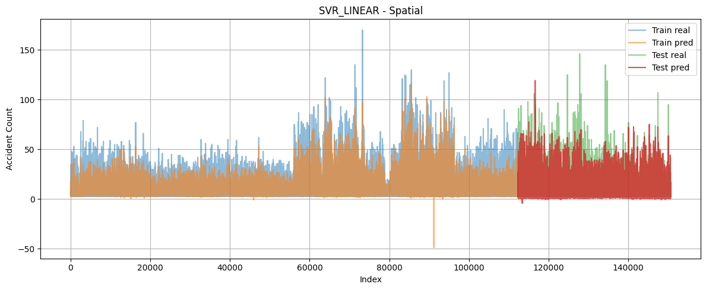
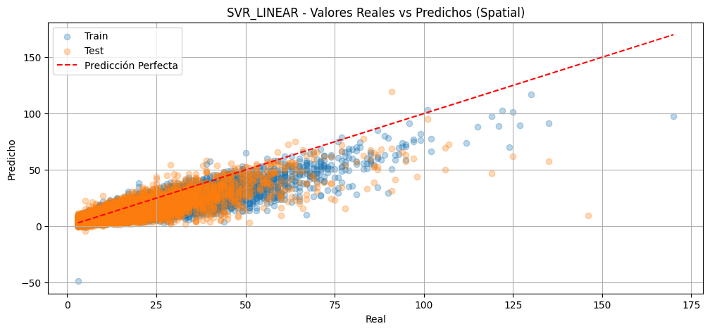
<Figure size 1200x400 with 0 Axes>
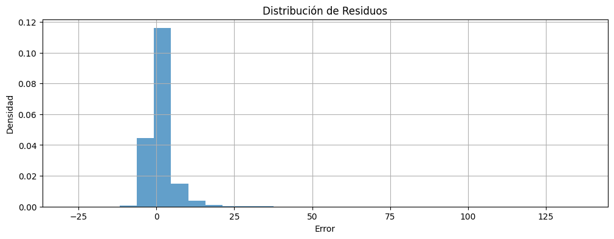
========================================
Optimizando SVR_RBF
========================================
c:\Users\Sara\AppData\Local\Programs\python\Python312\Lib\site-packages\sklearn\model_selection\_search.py:1108: UserWarning: One or more of the test scores are non-finite: [nan]
warnings.warn(
→ Validación: TEMPORAL
- Mejores parámetros: {}
- Train RMSE: 8.00, MAE: 4.87, R2: 0.07
- Test RMSE: 7.61, MAE: 4.93, R2: 0.10
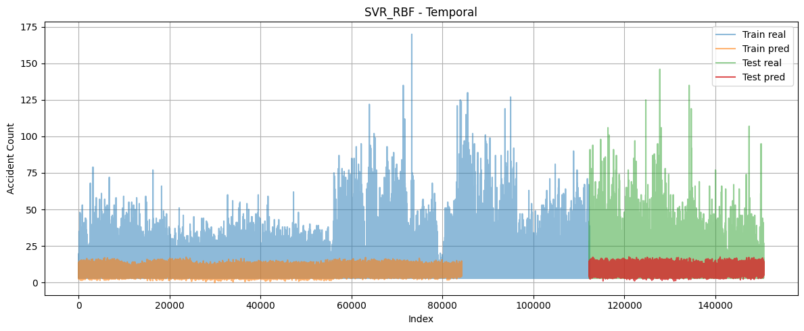
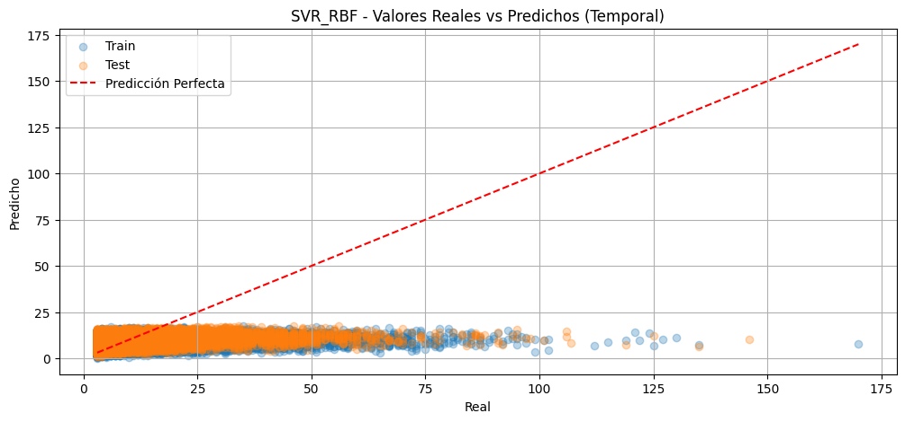
<Figure size 1200x400 with 0 Axes>
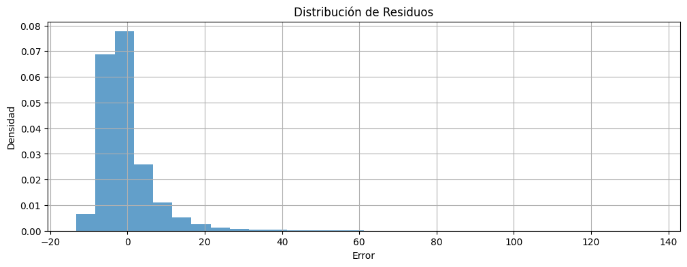
c:\Users\Sara\AppData\Local\Programs\python\Python312\Lib\site-packages\sklearn\model_selection\_search.py:1108: UserWarning: One or more of the test scores are non-finite: [nan]
warnings.warn(
→ Validación: SPATIAL
- Mejores parámetros: {}
- Train RMSE: 7.97, MAE: 5.06, R2: -0.05
- Test RMSE: 7.60, MAE: 4.86, R2: 0.10
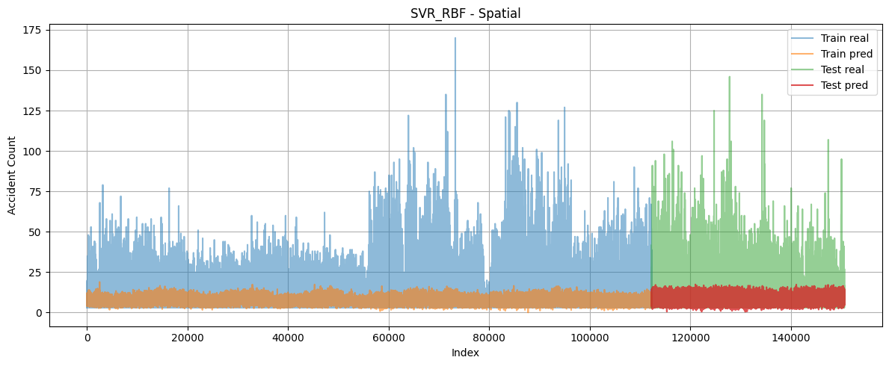
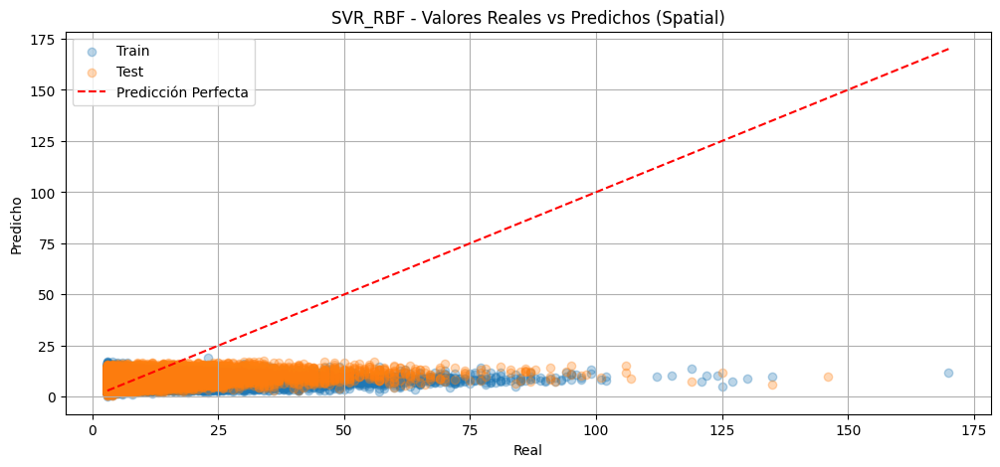
<Figure size 1200x400 with 0 Axes>
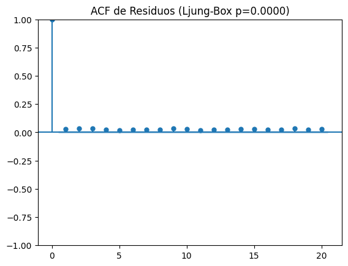
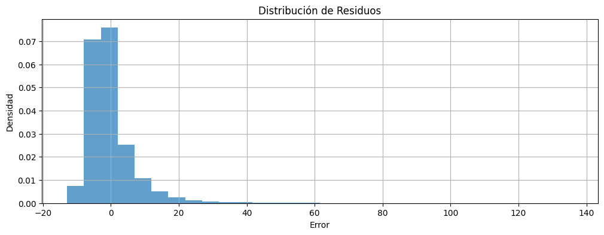
results_df = pd.DataFrame(results)
print("\n\nRESULTADOS FINALES:")
print(results_df)
RESULTADOS FINALES:
Model Type Train_RMSE Train_MAE Train_R2 Test_RMSE \
0 KNN Temporal 6.53 3.80 0.38 6.10
1 KNN Spatial 7.63 4.63 0.04 6.06
2 RIDGE Temporal 3.93 2.40 0.77 4.10
3 RIDGE Spatial 4.07 2.68 0.73 4.10
4 LASSO Temporal 6.50 3.69 0.38 5.19
5 LASSO Spatial 6.80 4.21 0.24 5.19
6 RANDOM_FOREST Temporal 3.78 2.17 0.79 3.90
7 RANDOM_FOREST Spatial 3.99 2.37 0.74 3.90
8 XGBOOST Spatial 3.72 2.34 0.77 3.84
9 SVR_LINEAR Temporal 3.80 2.30 0.79 4.22
10 SVR_LINEAR Spatial 3.97 2.51 0.74 4.23
11 SVR_RBF Temporal 8.00 4.87 0.07 7.61
12 SVR_RBF Spatial 7.97 5.06 -0.05 7.60
Test_MAE Test_R2 Duration (s) Ljung-Box p-value Jarque-Bera p-value
0 3.52 0.42 9.55 0.0 0.0
1 3.50 0.43 9.70 0.0 0.0
2 2.35 0.74 69.36 0.0 0.0
3 2.35 0.74 56.68 0.0 0.0
4 2.91 0.58 4.16 0.0 0.0
5 2.91 0.58 5.79 0.0 0.0
6 2.08 0.76 314.76 0.0 0.0
7 2.08 0.76 270.44 0.0 0.0
8 2.12 0.77 3.90 0.0 0.0
9 2.42 0.72 35.02 0.0 0.0
10 2.42 0.72 43.19 0.0 0.0
11 4.93 0.10 4.64 0.0 0.0
12 4.86 0.10 4.49 0.0 0.0
print(results_df.iloc[[6]].to_string(index=False))
Model Type Train_RMSE Train_MAE Train_R2 Test_RMSE Test_MAE Test_R2 Duration (s) Ljung-Box p-value Jarque-Bera p-value
RANDOM_FOREST Temporal 3.78 2.17 0.79 3.9 2.08 0.76 314.76 0.0 0.0
print(results_df.iloc[[7]].to_string(index=False))
Model Type Train_RMSE Train_MAE Train_R2 Test_RMSE Test_MAE Test_R2 Duration (s) Ljung-Box p-value Jarque-Bera p-value
RANDOM_FOREST Spatial 3.99 2.37 0.74 3.9 2.08 0.76 270.44 0.0 0.0
print(results_df.iloc[[8]].to_string(index=False))
Model Type Train_RMSE Train_MAE Train_R2 Test_RMSE Test_MAE Test_R2 Duration (s) Ljung-Box p-value Jarque-Bera p-value
XGBOOST Spatial 3.72 2.34 0.77 3.84 2.12 0.77 3.9 0.0 0.0